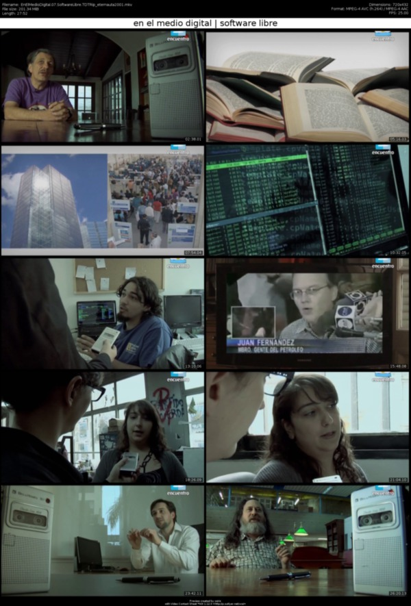

episodio Software Libre cliclo En el medio digital
index | CC-BY-SA | OSiUX | blog | docs
Canal Encuentro 1 cada día ofrece mejores programas y uno de ellos es el último ciclo de la serie en el medio que en esta oportunidad trata el mundo digital 2, el episodio 7 hablan sobre Software Libre y es muy gratificante que gcoop Cooperativa de Software Libre 3 sea parte del mismo como asi también el resto de colegas activistas de este movimiento que tantas satisfacciones me brinda día a día.
